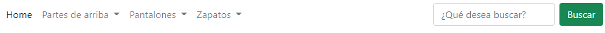

Enunciado
A continuación, deberá crear un menú de navegación utilizando elementos de Bootstrap:- Deberá tener un Home.
- Deberá tener tres secciones desplegables.
- Se llamarán Partes de arriba, Pantalones y Zapatos.
- Dentro de la sección Partes de arriba, deberá aparecer en el desplegable Camisetas, Camisas y Jerséis.
- Dentro del desplegable Zapatos, deberá aparecer Botas, Mocasines y Zapatillas.
- Dentro de la sección Pantalones, deberá aparecer Jeans, Shorts y Chinos.
- El menú deberá tener una barra de búsqueda donde el botón será verde y pondrá buscar, en la barra de búsqueda deberá poner ¿Qué desea buscar?
- El fondo de la barra de navegación deberá ser transparente.
Deberá obtener el siguiente resultado:

- Identifique los objetos creados, sus propiedades, métodos y funcionalidad.
Actividad asociada al CE2.3 y CE3.2
CE2.3 Describir e identificar los objetos del documento que permiten añadir interactividad entre el usuario y el script, así como sus propiedades y métodos.
CE3.2 Identificar los objetos, sus propiedades y sus métodos y su funcionalidad dentro del script ya desarrollado con el fin de ajustarlos a la página donde se va a integrar.
Solución
Identifique los objetos creados, sus propiedades, métodos y funcionalidad.
Se crean varios objetos de Bootstrap y se les asignan propiedades y métodos para que funcionen correctamente en el menú de navegación. A continuación, se detallan los objetos y sus funcionalidades:
- Objeto navbar: Es el objeto principal que crea la barra de navegación. Tiene la clase .navbar y se expande en dispositivos móviles con la clase .navbar-expand-sm. Tiene la propiedad bg-transparent que establece el fondo de la barra de navegación como transparente.
- Objeto container-fluid: Es un contenedor flexible proporcionado por Bootstrap que envuelve todo el contenido del menú de navegación. Permite que los elementos dentro de él se ajusten correctamente al ancho del dispositivo.
- Objeto navbar-brand: Representa el enlace de la marca/logo del sitio web en la barra de navegación. No tiene métodos, pero tiene la propiedad href que se puede establecer para redirigir al usuario a la página de inicio o cualquier otra página al hacer clic en el logo.
- Objeto navbar-toggler: Es el botón que se muestra en dispositivos móviles para desplegar el menú en un formato de hamburguesa. Tiene el atributo data-bs-toggle que activa el despliegue del menú al hacer clic en el botón.
- Objeto navbar-collapse: Es el contenedor que envuelve los elementos del menú que se mostrarán cuando se despliegue el menú en dispositivos móviles. Tiene la clase .collapse para ocultar inicialmente los elementos del menú.
- Objeto navbar-nav: Es el contenedor de la lista de elementos del menú. Agrupa los enlaces y elementos desplegables en la barra de navegación.
- Objeto nav-item: Representa un elemento de la lista del menú. Contiene enlaces o elementos desplegables dentro de él.
- Objeto dropdown: Representa un elemento de lista con un menú desplegable. Tiene la clase .dropdown y un enlace que sirve como elemento de activación para mostrar el menú desplegable.
- Objeto dropdown-menu: Es el menú desplegable que se muestra cuando se hace clic en el enlace activador. Contiene enlaces dentro de él.
- Objeto form-inline: Es un formulario en línea de Bootstrap que agrupa elementos de formulario (en este caso, el campo de búsqueda y el botón de búsqueda) en una sola línea horizontal.
- Objeto form-control: Representa un campo de entrada del formulario. Permite a los usuarios ingresar texto.
- Objeto btn: Representa un botón. Tiene la clase .btn-success para darle un estilo de botón verde.
- Objeto form: Representa un formulario en HTML. No tiene propiedades o métodos específicos, pero es utilizado para agrupar elementos de formulario relacionados.
En general, estos objetos de Bootstrap junto con sus propiedades y métodos permiten crear un menú de navegación con elementos desplegables y una barra de búsqueda funcional, siguiendo las especificaciones proporcionadas.
Actividad asociada al CE2.3
Hay varios objetos y elementos que permiten añadir interactividad entre el usuario y el script. A continuación, se describen los principales objetos y elementos involucrados, así como sus propiedades y métodos relevantes:
- Objeto navbar-toggler: Es un botón de alternancia que permite mostrar u ocultar el menú de navegación en dispositivos móviles. Tiene el atributo data-bs-toggle que activa el despliegue del menú al hacer clic en el botón. El objeto navbar-toggler está vinculado a la funcionalidad del menú desplegable.
- Objeto collapse: Es una clase de Bootstrap que permite ocultar o mostrar elementos HTML mediante animaciones. Se aplica a la clase navbar-collapse, que es el contenedor del menú de navegación en dispositivos móviles. Tiene métodos relevantes como show() y hide() que permiten mostrar u ocultar el contenido respectivamente.
- Objeto dropdown: Es un componente interactivo de Bootstrap que crea un menú desplegable. Se aplica a los elementos con la clase dropdown. Tiene métodos como toggle() que muestra u oculta el menú desplegable al hacer clic en el elemento.
- Objeto form: Representa un formulario en HTML. Puede contener elementos de entrada como campos de texto y botones. Permite al usuario enviar datos o interactuar con el script. No tiene propiedades o métodos específicos, pero se puede utilizar para capturar la entrada del usuario.
- Objeto input: Representa un campo de entrada en un formulario HTML. Tiene propiedades como type, placeholder y value que permiten especificar el tipo de entrada, el texto de marcador de posición y el valor actual del campo, respectivamente.
- Objeto button: Representa un botón en HTML. Puede tener atributos como type, class y onclick. El atributo type especifica el tipo de botón, mientras que class se utiliza para aplicar estilos. El atributo onclick permite asociar una función o script que se ejecutará cuando se haga clic en el botón.
- Objeto script: Es un elemento HTML que se utiliza para incrustar o referenciar scripts en una página web. Puede contener código JavaScript que añade interactividad al documento. Permite definir funciones y manipular elementos HTML para responder a las interacciones del usuario.
Estos objetos y elementos permiten la interacción del usuario con el menú de navegación y otros elementos de la página web. A través de eventos como clicks en botones o enlaces, se desencadenan funciones o scripts que modifican la visualización y el comportamiento de los elementos, proporcionando una experiencia interactiva al usuario.
Actividad asociada al CE3.2
No se incluye ninguna funcionalidad o interacción específica. Sin embargo, se puede añadir un script adicional para adaptar los objetos, propiedades y métodos a la página donde se integrará el menú de navegación. Por ejemplo:
<script>
// Función que se ejecuta cuando se hace clic en el botón de búsqueda
function buscar() {
// Obtener el valor del campo de búsqueda
var searchTerm = document.getElementById("searchInput").value;
// Realizar alguna acción con el término de búsqueda (por ejemplo, redirigir a una página de resultados)
alert("Realizando búsqueda: " + searchTerm);
// window.location.href = "resultados.html?q=" + searchTerm;
}
</script>Este script que define una función llamada buscar(). Esta función se ejecutará cuando el usuario haga clic en el botón de búsqueda. Dentro de la función, se obtiene el valor del campo de búsqueda utilizando document.getElementById("searchInput").value, donde "searchInput" es el ID del campo de búsqueda en el HTML.
Se puede realizar cualquier acción deseada con el término de búsqueda. En este caso se muestra una alerta con el término de búsqueda, pero se puede modificar según las necesidades. Por ejemplo, redirigir al usuario a una página de resultados de búsqueda utilizando window.location.href.
Al ajustar y personalizar el script de esta manera, puedes adaptar los objetos, propiedades y métodos a la página donde se va a integrar el menú de navegación, proporcionando la funcionalidad deseada al interactuar con los elementos del menú.